Controllers on the brush
20 Nov. Painting, step 3: your table of 16 Nov, built in the core. The pedal keeps the brush on the canvas and the paint wet, the mod wheel is the brush’s load, the pitch wheel bends the stroke, a hard strike spatters and leaning on a key widens the stroke. Every one of them changes the strokes themselves, their width, pressure and paint, so the look draws what the map holds and Scan hears it. Expression (CC 11) is still the Picture amount.
Each phrase below is one performance painted twice: once with the brush hearing the controller, and once with the brush deaf to it. The sound differs only by what Scan reads off the paint, and the pictures by what the brush did. Scan is at 60 and the Picture amount at nought throughout, so what you hear is Scan alone.
Two things to decide.
Where the wheel rests. The wheel is read from its middle. A wheel you have never moved leaves the brush as it was; down from the middle is drier, to a scratchy brush at the bottom; up is heavier. A mod wheel rests at the bottom, though, so if you sweep it and let it fall back, the brush paints dry. The other way round, with today’s brush at the bottom and only heavier going up, there would be no way to reach the dry brush.
The wheel and pressure do two things. In Paint the brush reads the wheel and pressure as well as whatever Expression’s menus give them to: the wheel is still the vibrato by default, so sweeping it bends the pitch a little and loads the brush at once. Nothing chooses between them yet. A switch could, if you want one.
How to read the numbers
Centroid is the brightness of what Scan reads, in harmonics: 1 is a sine, about 2 is mellow and 3 is reedy. Movement is how much it changes from one sixtieth of a second to the next; under 0.005 is a steady tone. Glow, Motion, Memory are the Picture amount’s three reads, as medians. Brush is the strokes’ width in the map’s cells (128 across), the median and the widest tenth. Paint at the end is the map’s paint summed, and how much of it is wet. The map pictures show thickness in grey and wet paint in blue; the looks are the page’s own paint view, fed the core’s strokes a sixtieth of a second at a time.
A pluck’s slow melody under the pedal
A short pluck (Tine piano’s settings, decayed to nothing in a quarter second), C E G C B G E D C at a note a second, the sustain pedal down from the start and let go at the end. Each note is silent long before the next.
With the pedal, the brush stays on the canvas through the silences, laying what it still holds, and the paint stays wet until the pedal goes up. Without, the brush lays only while there is sound: nine marks of one stroke, as paint width left it.

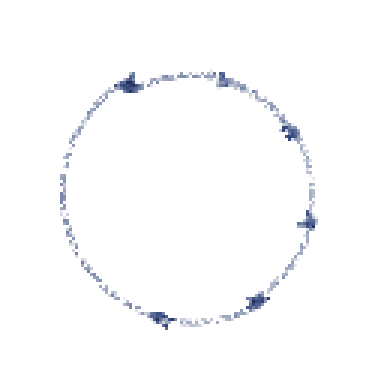
| Centroid | 3.04 (2.78–3.72) |
|---|---|
| Movement | 0.0006 |
| Glow / Motion / Memory | 0.36 / 0.09 / 0.00 |
| Brush, median (p90) | 3.8 (3.8) cells |
| Paint at the end | 92, 68% wet |
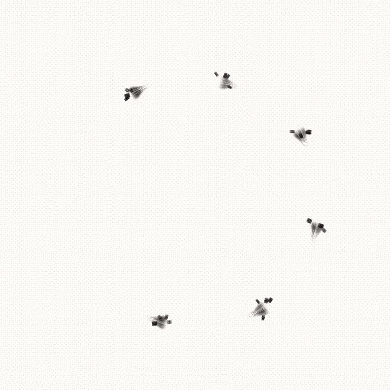
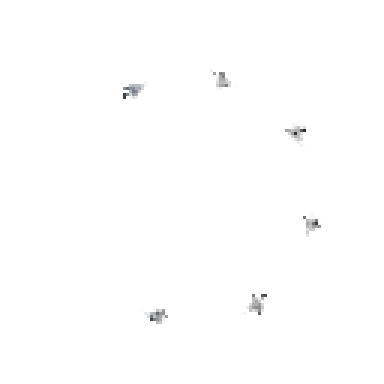
| Centroid | 4.41 (3.73–4.94) |
|---|---|
| Movement | 0.0002 |
| Glow / Motion / Memory | 0.02 / 0.05 / 0.00 |
| Brush, median (p90) | 3.7 (5.6) cells |
| Paint at the end | 31, 5% wet |
A held chord with the mod wheel swept
A slow pad, C3 G3 E4 held eight seconds. The wheel goes to the top over 2.5 s, down to the bottom over 2.5 s, then back to its middle. The wheel is also Expression’s vibrato, as it is by default, so both renders have the vibrato in them.
With it, the brush loads heavier and presses wider at the top, and dries to a scratchy brush at the bottom. Without, it is the brush at rest throughout.
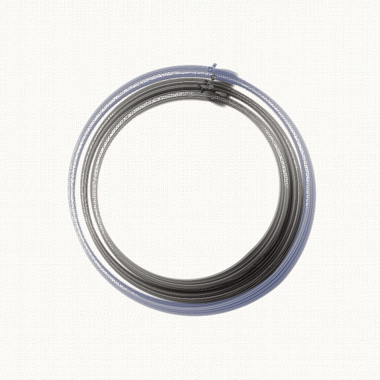
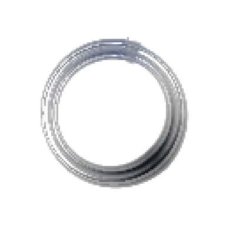
| Centroid | 1.64 (1.33–2.28) |
|---|---|
| Movement | 0.0033 |
| Glow / Motion / Memory | 0.51 / 0.26 / 0.10 |
| Brush, median (p90) | 5.4 (7.8) cells |
| Paint at the end | 777, 9% wet |


| Centroid | 1.65 (1.39–3.13) |
|---|---|
| Movement | 0.0055 |
| Glow / Motion / Memory | 0.48 / 0.26 / 0.10 |
| Brush, median (p90) | 6.0 (6.0) cells |
| Paint at the end | 650, 9% wet |
A bend
A fifth, A3 and E4, held seven seconds on a plain tone, the bend range set to an octave. The pitch wheel goes up an octave and back, then down one and back. At the usual two semitones the stroke moves under one of the map’s cells, which the eye cannot find under a stroke ten cells wide, though the pieces measure it.
With it, the strokes bend with the pitch, since pitch is the radius, and each note reads the ring it is bent to. Without, they stay on their notes’ rings while the sound bends.
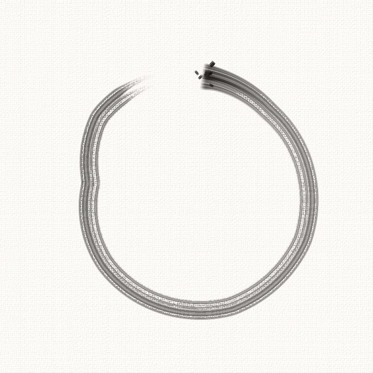
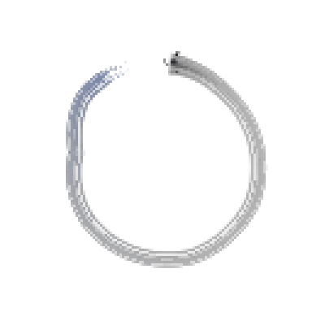
| Centroid | 2.37 (1.78–3.30) |
|---|---|
| Movement | 0.0071 |
| Glow / Motion / Memory | 0.36 / 0.10 / 0.04 |
| Brush, median (p90) | 5.3 (5.5) cells |
| Paint at the end | 236, 8% wet |

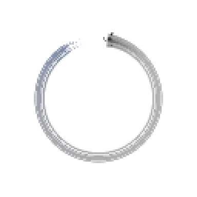
| Centroid | 2.12 (1.82–3.78) |
|---|---|
| Movement | 0.0062 |
| Glow / Motion / Memory | 0.34 / 0.09 / 0.04 |
| Brush, median (p90) | 5.3 (5.5) cells |
| Paint at the end | 228, 8% wet |
Soft against hard strikes
C D E F G F E D, a note every 0.6 s, alternating velocity 30 and 127, at Strike 100 so a hard strike’s impact is full.
With it, each hard strike throws spatter, further the harder; the soft ones throw almost none. Without, no spatter at all (the strike’s dip and press are the same in both).
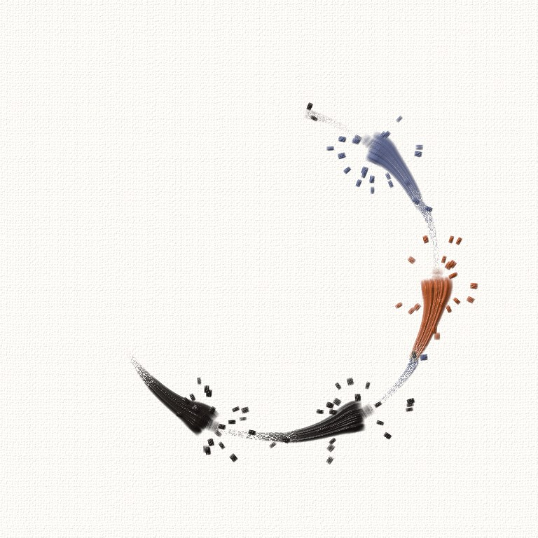

| Centroid | 3.00 (2.79–3.53) |
|---|---|
| Movement | 0.0029 |
| Glow / Motion / Memory | 0.42 / 0.34 / 0.00 |
| Brush, median (p90) | 3.8 (6.7) cells |
| Paint at the end | 340, 32% wet |
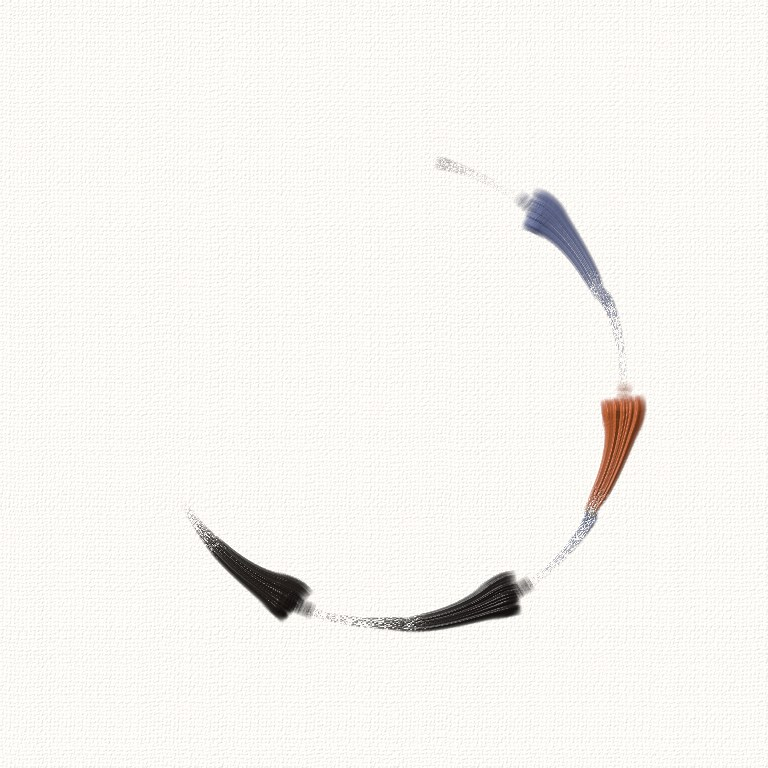
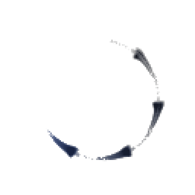
| Centroid | 3.15 (2.96–3.68) |
|---|---|
| Movement | 0.0033 |
| Glow / Motion / Memory | 0.37 / 0.32 / 0.00 |
| Brush, median (p90) | 4.1 (6.8) cells |
| Paint at the end | 272, 34% wet |
Aftertouch leaned on
A slow pad, A3 E4 A4 held six seconds. Channel pressure rises to full over a second, holds, and lets off over a second.
With it, the strokes widen and press in while the keys are leaned on, smearing the wet paint they cross. Without, the same width throughout.

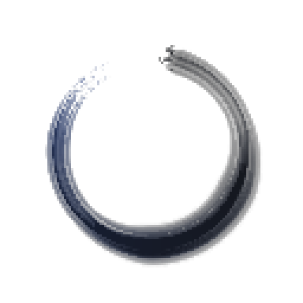
| Centroid | 1.71 (1.22–2.67) |
|---|---|
| Movement | 0.0027 |
| Glow / Motion / Memory | 0.63 / 0.60 / 0.25 |
| Brush, median (p90) | 6.4 (12.0) cells |
| Paint at the end | 1728, 22% wet |


| Centroid | 1.72 (1.48–2.67) |
|---|---|
| Movement | 0.0053 |
| Glow / Motion / Memory | 0.54 / 0.31 / 0.19 |
| Brush, median (p90) | 6.0 (6.1) cells |
| Paint at the end | 620, 14% wet |
Made by render.py (with render.cpp, the core playing each phrase, beside this
page) and page.py. Every number is in results.json. The brush is deafened with
PaintParams::hears and spatterAt, which exist for this and for the tests’ nulls;
in the instrument the brush hears everything.